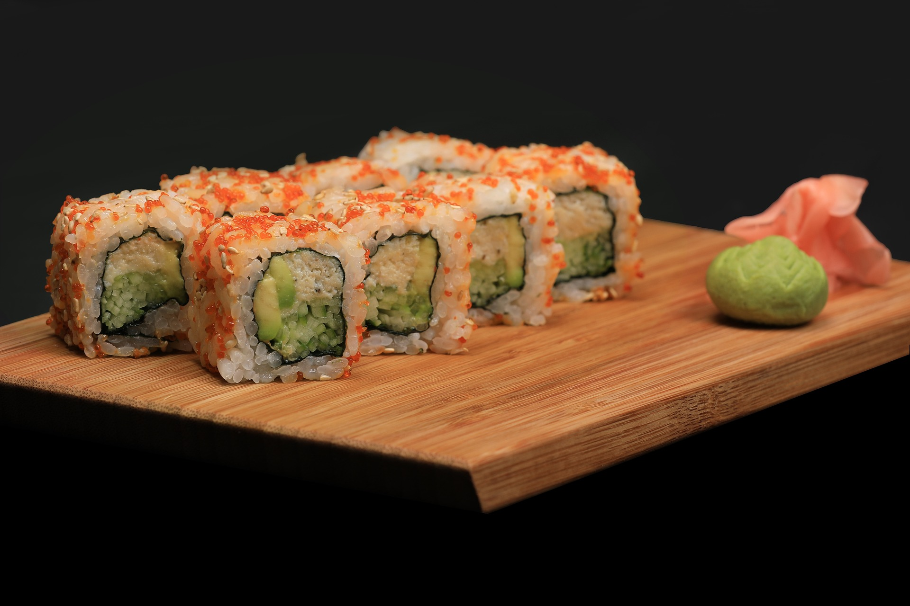

Sushi

Description
Sushi is a traditional Japanese dish featuring vinegared rice, which is combined with various other elements to create a balanced and flavorful meal. The dish is renowned for its delicate flavors and aesthetic presentation. Sushi is often enjoyed with accompaniments such as soy sauce, pickled ginger, and wasabi, adding to its complexity and enhancing the overall dining experience. It is celebrated for its combination of taste, texture, and visual appeal, making it a popular and elegant choice in Japanese cuisine.
Ingredients
- Sushi rice
- Fish or seafood
- Nori (seaweed sheets)
- Vegetables
- Soy sauce
- Pickled ginger
- Wasabi (for added heat)
- Rice vinegar (to season the rice)
- Sugar and salt (to balance the rice seasoning)
Steps
- Rinse the sushi rice under cold water until it runs clear and cook according to package instructions.
- Mix rice vinegar, sugar, and salt into the warm rice, then let it cool to room temperature.
- Slice fish or seafood and vegetables into thin strips for the fillings.
- Place a sheet of nori on a bamboo sushi mat with the shiny side facing down
- Wet your hands and spread a handful of rice evenly over the nori, leaving an inch at the top.
- Add your chosen fillings in a horizontal line across the center of the rice.
- Roll the sushi tightly using the bamboo mat, sealing the edge with a bit of water
- Cut the roll into bite-sized pieces using a sharp knife, and serve with soy sauce, ginger, and wasabi.